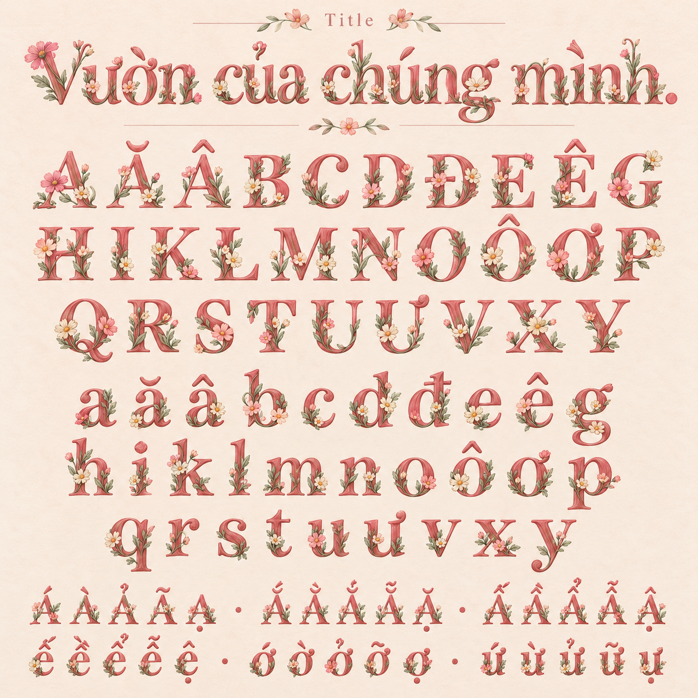
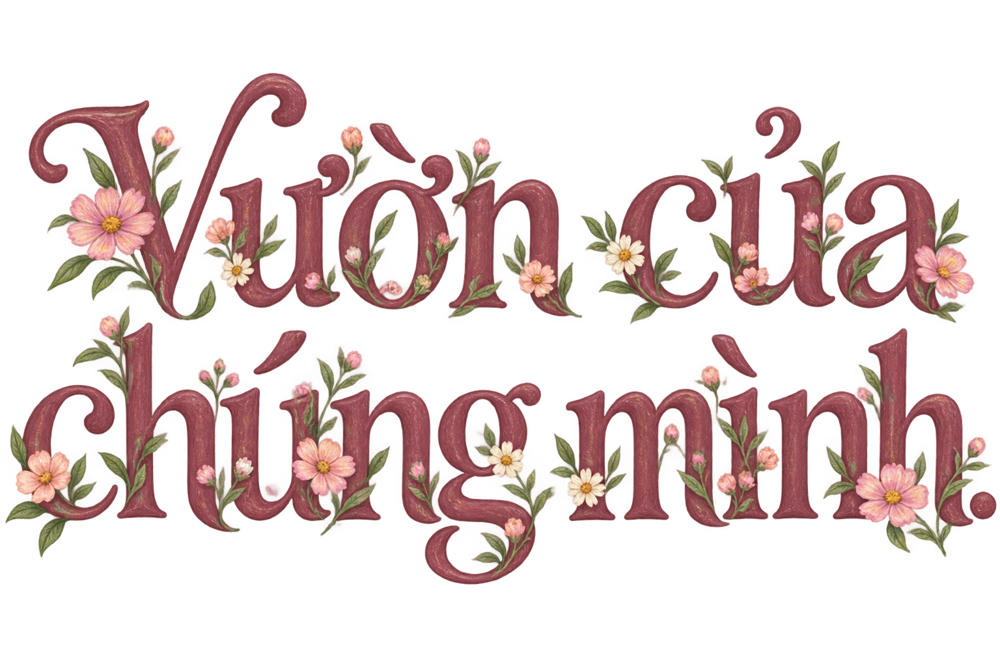
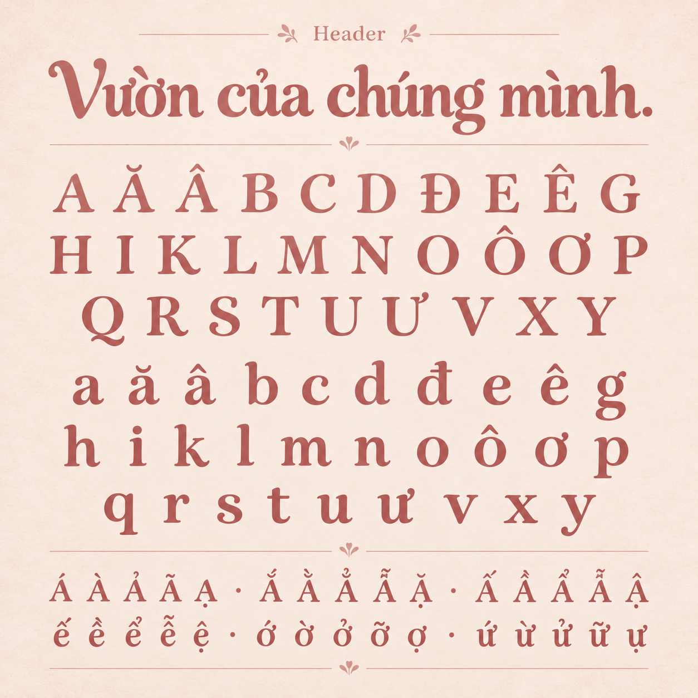
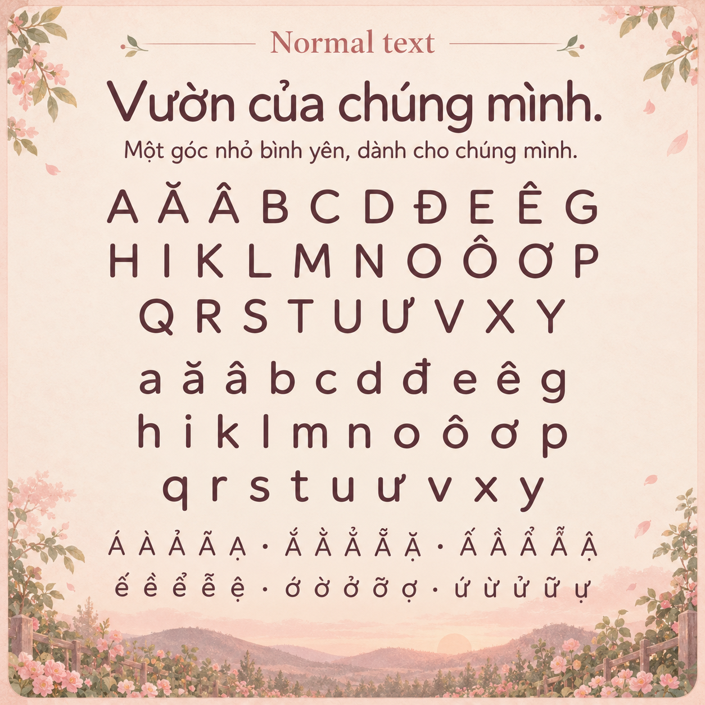

Xem trong vườn hoaBa bảng chữ trong vườn.
Hồng hoàng hôn, nét vẽ tay, hoa lá và Loopy. Ba cấp chữ cùng một phong cách, nhưng có độ trang trí khác nhau.
Đây là các bảng concept PNG, chưa phải bộ font có thể gõ. Chữ mẫu HTML bên dưới dùng font sẵn trên máy để đối chiếu ký tự và dấu tiếng Việt.
Title · Chữ hoa và lá
Nét serif mềm làm khung chữ; lá sage, cosmos hồng và cúc kem đan vào nét. Dành cho tiêu đề lớn ở giữa vườn.

Hoa lá đi theo nét chữ; dấu thanh cần tách rõ khỏi cánh hoa.A Ă Â B C D Đ E Ê G H I K L M N O Ô Ơ P Q R S T U Ư V X Ya ă â b c d đ e ê g h i k l m n o ô ơ p q r s t u ư v x y

Mẫu lettering dùng cho tiêu đề giữa homepage.
Header · Serif mềm
Chữ thông thường, đầu nét bo nhẹ và đường cong ấm. Giữ liên hệ với Title, tiết chế chi tiết để dùng cho tên mục.

Nét chữ rõ, khoảng trống đủ cho dấu kép của tiếng Việt.A Ă Â B C D Đ E Ê G H I K L M N O Ô Ơ P Q R S T U Ư V X Ya ă â b c d đ e ê g h i k l m n o ô ơ p q r s t u ư v x y
Normal text · Chữ đọc hằng ngày
Sans-serif ấm, lòng chữ thoáng và nét đều. Màu mận trầm để đọc trên nền hồng nhạt; không thêm hoa vào đoạn văn.

Ưu tiên phân biệt a, ă, â; o, ô, ơ; d, đ và giữ rõ dấu thanh.A Ă Â B C D Đ E Ê G H I K L M N O Ô Ơ P Q R S T U Ư V X Ya ă â b c d đ e ê g h i k l m n o ô ơ p q r s t u ư v x y
Mẫu dấu để đối chiếu: á à ả ã ạ · ắ ằ ẳ ẵ ặ · ấ ầ ẩ ẫ ậ · ế ề ể ễ ệ · ớ ờ ở ỡ ợ · ứ ừ ử ữ ự.